Lectures in this section
Each lecture links to the notes that cover it. Encryption and IAM basics from Section 16 apply throughout.
- AWS KMS overview and integration ~4:00 Slide 685
- Symmetric versus asymmetric keys ~3:00 Slide 686
- AWS owned, AWS managed and customer managed keys ~5:00 Slides 687–688
- Key rotation, policies and pricing ~6:00 Slides 689–692
- Cross-Region and cross-account KMS keys ~5:00 Slides 693–695
- Amazon Macie — sensitive data discovery in S3 ~4:00 Slide 697
- AWS Secrets Manager — rotation and replication ~6:00 Slides 699–702
- AWS Shield Standard versus Advanced ~3:00 Slides 704–705
- Encryption at rest and in transit across data services ~6:00
- PII discovery, masking and restricted access ~5:00
AWS Key Management Service (KMS)
AWS Key Management Service manages encryption keys used to protect data at rest across S3, EBS, RDS, Redshift, DynamoDB, Kinesis, Glue, and dozens of other services. You never store raw key material in application code — services and SDKs call KMS APIs, and CloudTrail logs every use for audit.
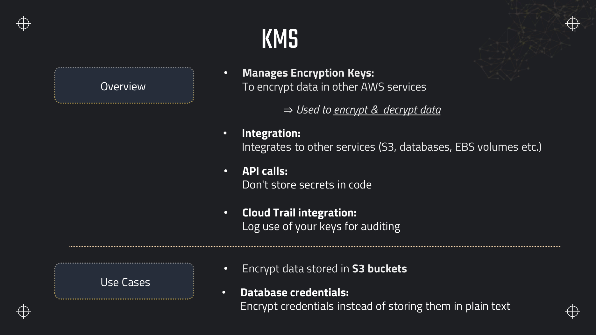
Decrypt.Envelope encryption
KMS never encrypts more than 4 KB in a single Encrypt call. For a multi-gigabyte S3 object or Redshift table, services use envelope encryption:
- KMS
GenerateDataKeyreturns a plaintext data key and the same key encrypted (wrapped) under the KMS CMK. - The service encrypts the bulk data locally with the plaintext data key (AES-256), then discards the plaintext key from memory.
- The encrypted data key is stored alongside the ciphertext (S3 object metadata, EBS volume header, etc.).
- On decrypt, KMS
Decryptunwraps the data key; the service decrypts the payload locally.
Envelope encryption — how large objects stay encrypted without sending terabytes through KMS
aws kms generate-data-key \
--key-id alias/dea-analytics-cmk \
--key-spec AES_256 \
--encryption-context service=s3,bucket=dea-lab-ab-4821
# Response includes:
# Plaintext — base64 AES key (use once, then discard)
# CiphertextBlob — encrypted data key stored with the objectEncrypt call. The CMK protects the data key; the data key protects the file.Request rate and caching
KMS has a default quota of roughly 5,500–30,000 requests per second per account per Region (varies by operation and can be raised). High-volume workloads that call Decrypt on every S3 object can throttle. Mitigations the exam mentions:
- S3 Bucket Keys — reduce KMS calls by up to 99% for SSE-KMS buckets by using a bucket-level key.
- Data key caching in Glue, Redshift, and custom applications — reuse generated data keys for a bounded time/count.
- Request quota increase via Service Quotas console for sustained high RPS.
Types of KMS keys
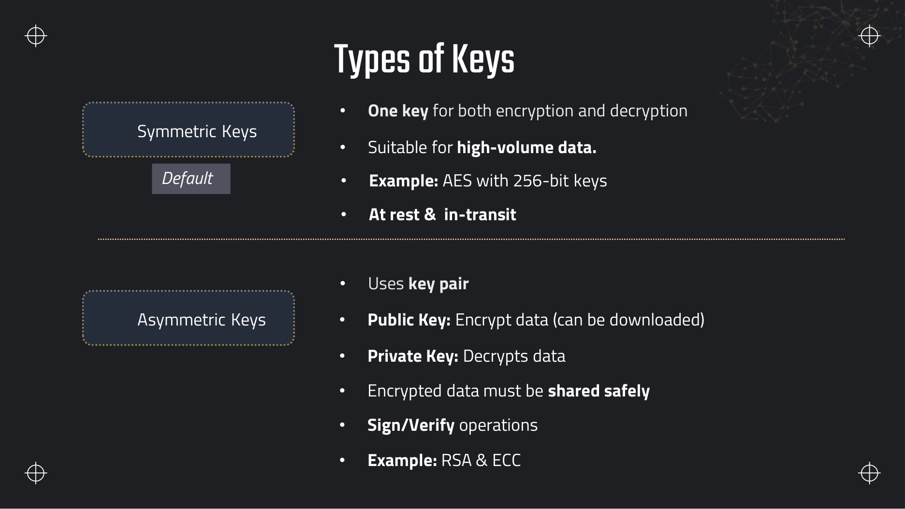
| Type | Operations | Use in data pipelines |
|---|---|---|
| Symmetric (default) | Same key encrypts and decrypts; AES-256 | SSE-KMS on S3, RDS, Redshift, EBS, DynamoDB, Kinesis, Glue connection secrets |
| Asymmetric | Public key encrypts or verifies; private key decrypts or signs (RSA, ECC) | Digital signatures, TLS cert workflows, distributed signing with multi-Region keys |
AWS owned, AWS managed and customer managed keys
| Key type | Who owns it | Visible in your KMS console | Key policy control | Rotation |
|---|---|---|---|---|
| AWS owned | AWS (shared across customers) | No | No | AWS manages |
| AWS managed | AWS, per-account (alias aws/service) | Yes, read-only policies | Limited | Automatic yearly |
| Customer managed (CMK) | You | Yes, full control | Full — mandatory key policy | Enable automatic or manual |
Key policy, IAM policy and grants
- Key policy — resource-based policy on the CMK itself. Mandatory on every CMK. Default gives the account root full access and allows IAM policies to delegate usage.
- IAM policy — identity-based; grants principals
kms:Decryptetc. only if the key policy permits IAM delegation. - Grant — temporary, fine-grained permission attached to the key for a specific principal — used heavily by AWS services (Redshift snapshot copy, cross-account S3) without editing the key policy each time.
{
"Version": "2012-10-17",
"Statement": [
{
"Sid": "EnableRoot",
"Effect": "Allow",
"Principal": { "AWS": "arn:aws:iam::123456789012:root" },
"Action": "kms:*",
"Resource": "*"
},
{
"Sid": "AllowGlueETL",
"Effect": "Allow",
"Principal": {
"AWS": "arn:aws:iam::123456789012:role/GlueETLRole"
},
"Action": [
"kms:Encrypt",
"kms:Decrypt",
"kms:GenerateDataKey",
"kms:DescribeKey"
],
"Resource": "*"
}
]
}CloudHSM versus KMS custom key stores
AWS CloudHSM provides dedicated FIPS 140-2 Level 3 hardware security modules you manage. KMS custom key stores back CMKs with keys stored in your CloudHSM cluster — KMS APIs stay the same but key material never leaves HSMs you control. Use when regulations require single-tenant HSMs; otherwise standard KMS CMKs suffice for most data-engineering workloads.
Key rotation and pricing
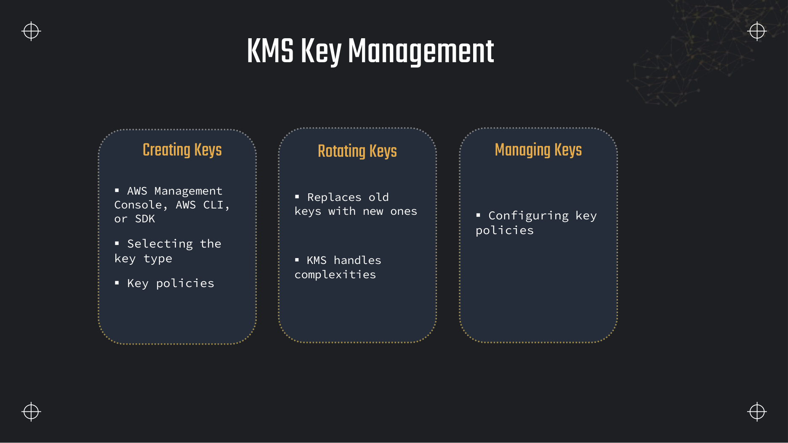
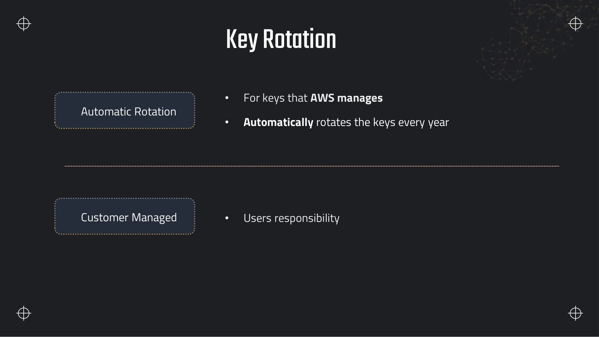
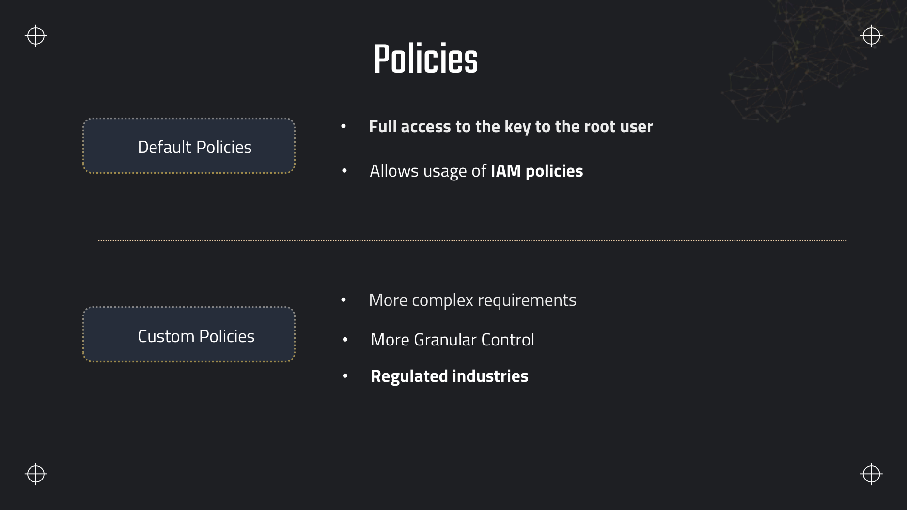
kms:*.What rotation does and does not change
- Changes: the underlying cryptographic material (new backing key version each year when automatic rotation is on).
- Does not change: key ID, ARN, alias, or key policy. Existing encrypted data decrypts without re-encryption.
- Manual rotation: create a new CMK, re-encrypt data, retire the old key — only when automatic rotation is insufficient (e.g. suspected compromise).
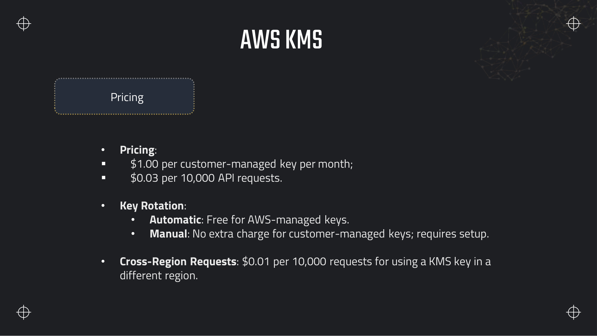
Cross-Region and cross-account keys
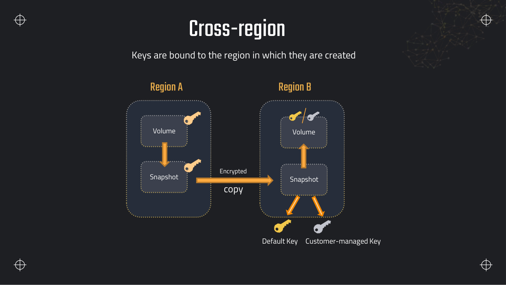
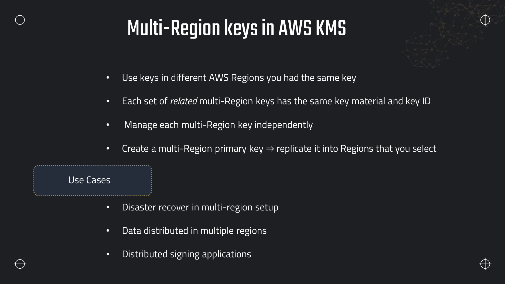
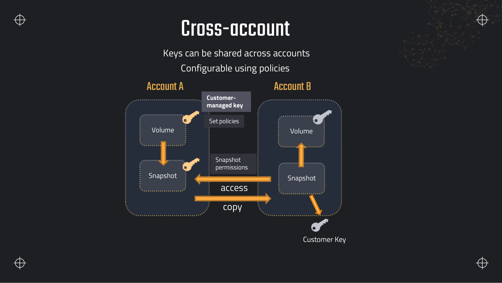
Decrypt. The destination account often re-encrypts with its own CMK on copy.Amazon Macie
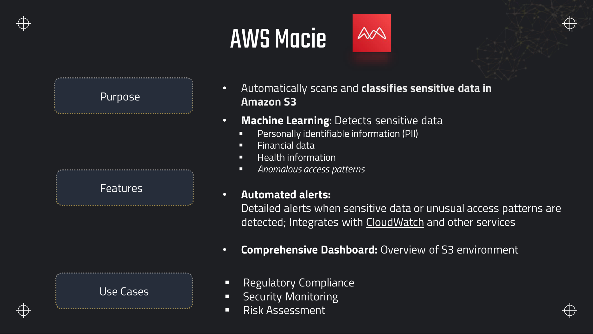
Findings and automated discovery
- Sensitive data discovery jobs — scheduled or one-time scans of S3 buckets; results are findings with severity, bucket, object key, and matched identifier type.
- Built-in managed data identifiers — names, emails, credit cards, AWS secret keys, etc.
- Custom data identifiers (CDIs) — regex or keyword patterns for company-specific tokens (employee IDs, internal account numbers).
- Automated sensitive data discovery — continuous, account-wide sampling that prioritises buckets likely to hold sensitive data without scanning every object daily.
Routing findings: Amazon EventBridge receives Macie events; rules forward to SNS, Lambda, Security Hub, or Jira. Security Hub aggregates Macie findings with GuardDuty and Inspector for a single compliance view.
{
"detail-type": "Macie Finding",
"source": "aws.macie",
"detail": {
"type": "Policy:IAMUser/S3BucketPublic",
"severity": { "score": 8.0, "description": "High" },
"resourcesAffected": [{
"s3Bucket": { "name": "dea-lab-ab-4821" },
"s3Object": { "key": "raw/customers/customers.csv", "size": 818 }
}],
"classificationDetails": {
"detailedResultsLocation": {
"objectArn": "arn:aws:s3:::dea-lab-ab-4821/raw/customers/customers.csv"
},
"result": {
"customDataIdentifiers": { "detections": [] },
"sensitiveData": [{
"category": "PERSONAL_INFORMATION",
"detections": [{ "type": "EMAIL_ADDRESS", "count": 11 }]
}]
}
}
}
}AWS Secrets Manager
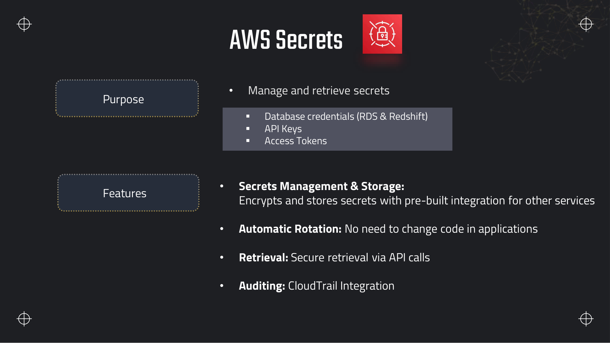
GetSecretValue.How data services consume secrets
- Glue — JDBC connections reference a Secrets Manager secret for username/password; job code can call
get_secret_valuefor API tokens. - DMS — source and target endpoints pull database credentials from Secrets Manager.
- Redshift / RDS — manage master passwords in Secrets Manager; rotation Lambda updates both the secret and the database.
- Lambda / EMR — retrieve secrets at cold start via SDK or environment variable resolved from Secrets Manager.
import json
import boto3
def get_rds_credentials(secret_arn: str, region: str = "us-east-1") -> dict:
client = boto3.client("secretsmanager", region_name=region)
resp = client.get_secret_value(SecretId=secret_arn)
return json.loads(resp["SecretString"])
secret = get_rds_credentials("arn:aws:secretsmanager:us-east-1:123456789012:secret:dea/rds/analytics-AbCdEf")
jdbc_url = "jdbc:postgresql://analytics.abc123.us-east-1.rds.amazonaws.com:5432/warehouse"
# spark.read.jdbc(jdbc_url, "orders", properties={"user": secret["username"], "password": secret["password"]})Secrets Manager versus Systems Manager Parameter Store
| Feature | Secrets Manager | SSM Parameter Store |
|---|---|---|
| Automatic rotation | Built-in with Lambda templates for RDS, Redshift, etc. | No native rotation — you build it |
| Cost | ~$0.40/secret/month + API calls | Standard parameters free; Advanced $0.05/parameter/month |
| Max secret size | 64 KB | Standard 4 KB; Advanced 8 KB |
| Hierarchy | Flat name + optional tags | /app/env/db/password path hierarchy |
| KMS integration | Always encrypted with CMK | SecureString uses KMS; String plain text |
| Cross-Region replication | Native replica secrets | Manual copy or automation |
| Exam pick | Rotating DB credentials, cross-Region DR secrets | Config flags, non-sensitive hierarchies, large fleets of static params |
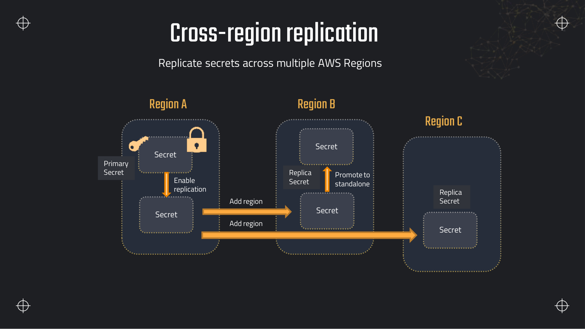
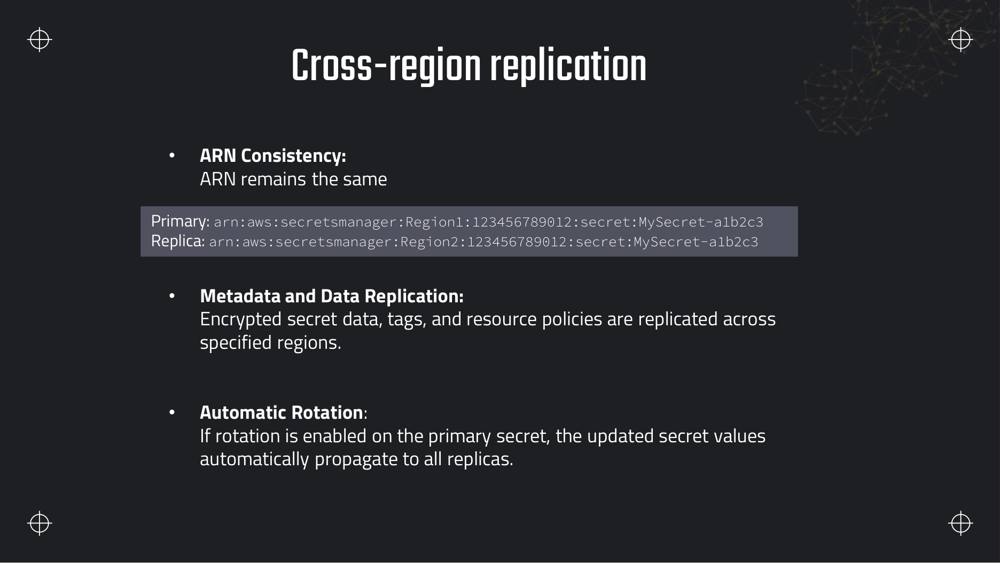
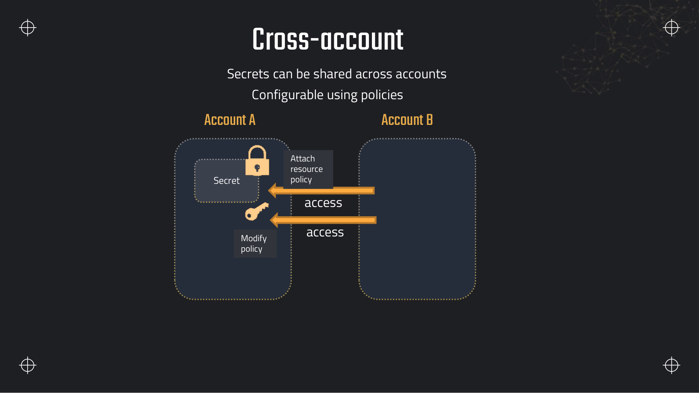
GetSecretValue.AWS Shield
AWS Shield provides DDoS protection for internet-facing resources. It matters to data engineers when public ingestion endpoints (API Gateway, CloudFront-backed uploads, ALB in front of Kinesis Producer Library collectors) must stay available under attack.
| Tier | Cost | Protection | Notable extras |
|---|---|---|---|
| Standard | Free, automatic | Common L3/L4 and some L7 attacks on supported services | CloudWatch metrics, AWS Health notifications |
| Advanced | Monthly subscription + data transfer | Advanced attack detection, tailored mitigations | DRT 24/7, cost protection, AWS WAF credits, detailed attack diagnostics |
Encryption at rest and in transit
Domain 4 expects you to pick the right encryption mode per service — default encryption, SSE-S3 versus SSE-KMS, TLS in transit, and when client-side encryption is warranted.
| Service | At rest | In transit | Notes for pipelines |
|---|---|---|---|
| S3 | SSE-S3 (AWS owned), SSE-KMS (CMK), SSE-C (customer-provided key), DSSE-KMS | HTTPS (TLS) enforced by default; VPC endpoints keep traffic on AWS network | SSE-KMS + Bucket Keys for high volume; enforce aws:SecureTransport in bucket policy |
| EBS | Encrypted volumes with CMK; snapshot inherits key | N/A at block level | EMR and EC2 data nodes — enable encryption by default in the Region |
| RDS / Aurora | Storage encryption with AWS managed or CMK at creation time | TLS connections (sslmode=require) | Cannot encrypt an existing unencrypted instance in place — snapshot-copy-encrypt |
| Redshift | Cluster encryption with CMK; snapshot encryption | SSL to clients | SSE-KMS on UNLOAD/COPY to S3 when using CMK bucket |
| DynamoDB | AWS owned key by default; optional CMK per table | HTTPS API | CMK when fine-grained key policy or cross-account access needed |
| Kinesis Data Streams | Server-side encryption with KMS CMK | HTTPS producers/consumers; in-VPC with interface endpoint | One CMK per stream; consumers need kms:Decrypt |
| Glue Data Catalog | Encrypt connection passwords and certain metadata with CMK | TLS for API calls | Security configuration attaches CMK to job bookmarks and logs |
| EMR | EBS encryption + optional S3 SSE-KMS on local HDFS spill | TLS for inter-node (enable in security configuration) | KMS permissions on EC2 instance profile for CMK-encrypted datasets |
Data masking and tokenisation
- Glue Studio / PySpark — hash, drop, or replace columns before writing curated Parquet.
- Glue DataBrew — visual recipes for masking emails, shuffling, numeric binning.
- S3 Object Lambda — transform objects on GET (redact PII in CSV/JSON at read time without duplicating data).
- Tokenisation — replace PII with reversible tokens stored in a separate vault (Secrets Manager or a tokenisation HSM); exam scenarios often pair irreversible hashing with Athena views for analytics-safe columns.
PII discovery, redaction and restricted access
PII lifecycle on AWS — from ingest to governed access
- Discover — Macie sensitive data discovery jobs on
raw/prefixes; CDIs for internal ID formats; route high-severity findings to SNS for quarantine. - Redact before curated — Glue or DataBrew job writes masked columns to
curated/; keep raw in a locked bucket with Lake Formation deny-by-default. - Restrict at query time — Lake Formation cell-level security and column filters; Redshift dynamic data masking and FGAC for warehouse consumers.
- Audit — CloudTrail for KMS and Secrets Manager; S3 server access logging or CloudTrail data events for object-level reads of sensitive prefixes.
Data privacy techniques and data residency
Personally identifiable information (PII) is any data that identifies or can be used to identify a specific individual — names, email addresses, government IDs, phone numbers, IP addresses tied to a household, and financial account numbers. The notes and Macie findings often abbreviate this as PII; the exam may use either form. Discovery comes first; then you choose how to transform or restrict data before analysts or non-production systems touch it.
Masking and redaction
Masking (and redaction) replaces sensitive values with a fixed pattern — asterisks, zeros, or a literal such as REDACTED — before data leaves a controlled environment. The operation is irreversible: the original value is discarded. Use masking for non-production copies, dashboards shown to broad internal audiences, and log output where the exact email or account number is not required. Glue DataBrew recipes and Glue Studio PII transforms apply masking rules visually or in PySpark; Athena views can expose masked columns over curated tables without duplicating storage.
Tokenisation
Tokenisation replaces a sensitive value with a surrogate token stored in the dataset while the original value lives in a separate secured vault (often HSM-backed or in Secrets Manager with strict IAM). Lookup is reversible only through that vault — the token alone reveals nothing. Payment card numbers are the classic exam scenario: store tokens in the lake, keep PANs in a PCI-scoped vault. Tokenisation preserves joinability on the token column without exposing the secret value in S3 or Redshift.
Anonymisation versus pseudonymisation
Anonymisation removes the link to an individual irreversibly — no key exists to re-identify the person. Properly anonymised data falls outside many privacy regulations' scope because it is no longer personal data. Pseudonymisation replaces direct identifiers with a consistent surrogate key (a pseudonym) so records can still be joined across tables and re-identified when the mapping key is available. Under GDPR, pseudonymised data remains in scope because re-identification is possible with the key.
Hashing with a salt is sometimes mistaken for anonymisation. An unsalted SHA-256 hash of an email is deterministic — anyone with the same email produces the same hash, so rainbow tables and known-email attacks re-identify rows. A salted hash per environment is better for matching duplicates within one system but still pseudonymisation if the salt can be recovered. True anonymisation requires techniques such as generalisation, suppression, or k-anonymity that remove or aggregate beyond recovery.
Data residency and sovereignty
Data residency (and data sovereignty) requirements mandate that certain data stays in a specific geography — often an AWS Region or country. Choosing the workload Region pins primary storage location for S3, Redshift, and RDS. Residency is easy to violate accidentally: S3 cross-Region replication, cross-Region backup copies, multi-Region KMS keys, and CloudTrail log delivery to a bucket in another Region all replicate bytes outside the approved boundary.
- Region-scoped KMS keys — standard CMKs do not leave their Region; use a CMK in the approved Region for SSE-KMS on buckets and databases that must stay local.
- AWS Local Zones — extend an parent Region into a metro area for latency-sensitive processing while data remains under that Region's control plane; not a substitute for choosing the correct primary Region for long-term storage.
- Enforcement — attach an SCP or IAM identity policy with an
aws:RequestedRegioncondition so principals cannot create or write resources outside approved Regions.
{
"Version": "2012-10-17",
"Statement": [{
"Sid": "DenyOutsideApprovedRegions",
"Effect": "Deny",
"Action": "*",
"Resource": "*",
"Condition": {
"StringNotEquals": {
"aws:RequestedRegion": ["eu-west-1", "eu-central-1"]
}
}
}]
}Which AWS service implements each technique
| Technique | AWS services |
|---|---|
| Discover PII | Amazon Macie — S3 content and bucket policy findings; Amazon Comprehend — entity detection (names, locations) in free text |
| Mask / transform | Glue DataBrew masking recipes; Glue ETL PII detection transforms; S3 Object Lambda for read-time redaction |
| Restrict at query time | Lake Formation column-level and cell-level security filters; Redshift dynamic data masking and FGAC; Athena views projecting masked columns |
| Tokenise | Custom vault + Glue job, or third-party tokenisation integrated via API; tokens stored in curated tables, secrets in Secrets Manager |
Related security services — exam distractors
| Service | What it actually does | Not this |
|---|---|---|
| GuardDuty | Threat detection from VPC Flow Logs, CloudTrail, DNS — finds compromised credentials, crypto-mining | Not PII classification (that is Macie) |
| Security Hub | Aggregates findings from Macie, GuardDuty, Inspector, firewalls into compliance standards (CIS, PCI) | Not a key store or secret vault |
| Inspector | Scans EC2 and container images for CVEs and network exposure | Not S3 content inspection |
| AWS WAF | Web ACL rules on CloudFront, ALB, API Gateway — block IPs, SQLi, rate limits | Not encryption; pairs with Shield Advanced |
| Amazon Detective | Graph analysis of GuardDuty findings — root-cause investigation | Not preventive controls or data masking |
Deeper detail and exam edge cases
KMS request economics, Macie scoping, Secrets Manager versus Parameter Store decision logic, and where Shield, GuardDuty, and Security Hub sit relative to encryption — the security operational layer the slides list but do not stress-test.
Limits and quotas that decide answers
| Limit | Value | Adjustable? | Why it matters |
|---|---|---|---|
| KMS direct encrypt payload | 4 KB maximum | No (hard) | Forces envelope encryption for S3, Redshift, and any large payload — exam constant. |
| Customer managed CMK monthly fee | $1 per key version per month | No — reduce key count | Many per-table CMKs add up; prefer shared CMKs with encryption context. |
| KMS API requests | $0.03 per 10,000 requests (symmetric) | Yes — S3 Bucket Keys, caching, quota increase | High-volume SSE-KMS S3 or Kinesis streams hit throttling without mitigation. |
| KMS key deletion waiting period | 7–30 days (mandatory) | No — choose window at schedule | Scheduled deletion is irreversible after the window — data encrypted only with that key becomes unrecoverable. |
| Imported key material expiry | Optional expiration date on import | Set at import time | Expired imported keys cannot encrypt new data; plan rotation before expiry. |
| Secrets Manager secret size | 64 KB | No (hard) | Large certs or JSON bundles may need S3 reference or split secrets. |
| Secrets Manager rotation | Lambda-based; built-in templates for RDS/Redshift | Configure rotation schedule | Exam answer for "rotate DB credentials without redeploying apps". |
| Parameter Store Standard tier | Free; 4 KB per parameter | N/A | Static config without rotation — cheaper than Secrets Manager. |
| Parameter Store Advanced tier | ~$0.05 per parameter per month; 8 KB | N/A | Policies and higher throughput; still no native rotation. |
| Macie sensitive data discovery | Per GB scanned + bucket evaluation charges | Yes — scope jobs to prefixes | Account-wide continuous discovery on all buckets is expensive — scope to raw/ PII paths. |
| Shield Standard | Free, automatic on CloudFront/ELB/Route 53 | N/A | Default DDoS protection — not a separate enable step. |
| Shield Advanced | ~$3,000/month subscription (plus data transfer) | N/A — contract tier | DRT, cost protection against attack scaling, WAF credits — business-critical public endpoints only. |
What you actually pay for
| Billed dimension | Unit | How to spend less |
|---|---|---|
| KMS CMK | $1/key/month + $0.03/10K API calls | Consolidate CMKs; enable S3 Bucket Keys; SSE-S3 where key policy control is not required. |
| KMS cross-Region calls | $0.01 per 10,000 cross-Region requests | Use multi-Region keys only when cross-Region decrypt is required; otherwise Region-local CMKs. |
| Secrets Manager | ~$0.40/secret/month + $0.05/10K API calls | Parameter Store Standard for non-rotating config; one secret per logical credential, not per field. |
| Macie discovery job | Per GB scanned (varies by Region) | One-time jobs on new prefixes; CDIs for internal patterns; disable continuous discovery on non-sensitive buckets. |
| Macie bucket evaluation | Per bucket assessed for sensitivity | Limit automated discovery scope; use S3 inventory + Macie targeted jobs instead of account-wide always-on. |
| CloudHSM | ~$1.60/hr per HSM instance | Reserve for regulatory single-tenant requirements; standard KMS CMKs suffice for most pipelines. |
| Shield Advanced | ~$3,000/month flat subscription | Justify only for revenue-facing public APIs under active DDoS threat model. |
Decrypt calls per day at $0.03/10K adds hundreds of dollars monthly. Bucket Keys or SSE-S3 where compliance allows cuts KMS API volume by orders of magnitude.kms:Decrypt fails if the CMK key policy does not trust the principal. The inverse also fails — key policy alone without IAM on the role. Both layers are required; grants add a third path for AWS services.Traps that catch people
- IAM alone for KMS — Customer managed keys require a key policy. IAM policies delegate only when the key policy includes
Enable IAM User Permissionsor explicit principal allow — classic AccessDenied on Glue reading SSE-KMS S3. kms:ViaServiceomitted — Restricting decrypt to S3 via condition"kms:ViaService": "s3.us-east-1.amazonaws.com"prevents direct decrypt from a compromised role while allowing S3 envelope flow — exam advanced pattern.- Deleting a CMK too quickly — Schedule deletion with minimum 7-day window; all data encrypted exclusively with that key becomes permanently unreadable after deletion completes.
- Multi-Region key when single-Region suffices — MRKs add complexity and cross-Region request charges. Use when the same key ID must decrypt in multiple Regions actively — not for simple snapshot copy (destination Region key is enough).
- Secrets Manager for static config — Non-rotating feature flags in Secrets Manager cost ~$0.40/month each; Parameter Store Standard is free for the same data.
- Parameter Store for rotating RDS password — No built-in rotation — you must build Lambda rotation yourself. Secrets Manager is the exam answer for automatic RDS credential rotation.
- Macie for threat detection — Macie classifies S3 content; GuardDuty detects anomalous API behaviour. Swapping them fails PII discovery and intrusion scenarios respectively.
- Inspector for S3 PII — Inspector scans EC2/ECR CVEs; it does not read S3 object contents. Macie is the S3 content scanner.
- Shield for encryption — Shield is DDoS protection, not encryption or WAF replacement. Advanced bundles with WAF but does not encrypt data at rest.
- Cross-account secret without KMS policy — Resource policy on the secret is not enough — the CMK encrypting the secret must also allow foreign account
kms:Decrypt.
Troubleshooting playbook
| Symptom | Most likely cause | What to check / fix |
|---|---|---|
| Glue/Athena AccessDenied on SSE-KMS S3 object | Job role missing kms:Decrypt or CMK key policy blocks role | IAM role policy + CMK key policy; check encryption context matches if enforced. |
| KMS ThrottlingException under load | Per-account KMS request quota exceeded | Enable S3 Bucket Keys; request quota increase; cache data keys in application. |
| Secrets Manager GetSecretValue AccessDenied cross-account | Missing secret resource policy or KMS key policy for foreign account | Both secret policy and CMK policy must allow the foreign role ARN. |
| Rotation failed in Secrets Manager | Rotation Lambda lacks VPC access to RDS or wrong security group | CloudWatch Logs for rotation Lambda; verify Lambda in same VPC/subnet as RDS with correct SG. |
| Macie job finds nothing on known PII file | Job scope excludes prefix or object below size threshold | Job S3 scope includes object key; check supported file types (CSV, JSON, Parquet, etc.). |
| Old ciphertext fails after CMK deletion | Key deleted past waiting period | Preventive: disable key instead of delete during investigation; restore from backup encrypted with active key. |
| Redshift COPY fails on KMS-encrypted S3 | Cluster IAM role lacks kms:Decrypt on bucket CMK | Redshift role policy + CMK key policy; same pattern as Glue. |
| GuardDuty finding but no PII context | Wrong service — need Macie for content classification | Run Macie discovery on affected bucket prefix; route findings to Security Hub. |
Production patterns
Mature pipelines use a shared analytics CMK with key policy trusting Glue, Redshift, and Lambda roles via kms:ViaService conditions where possible. Secrets Manager holds rotating JDBC credentials referenced by Glue connections and DMS endpoints. Macie runs one-time discovery on each new raw/ prefix before promotion to curated; continuous automated discovery is scoped to buckets tagged data-class=pii.
SSE-KMS lake pattern
- One CMK per environment (prod/staging); S3 Bucket Keys enabled.
- Bucket policy requires
aws:SecureTransportand SSE-KMS. - Lake Formation permissions align with CMK key policy principals.
Credential hygiene
- Secrets Manager for RDS/Redshift with 30-day rotation.
- Parameter Store hierarchy for non-secret config (
/dea/prod/glue/dpu). - Never embed passwords in Glue scripts or container images.
Anti-pattern: creating a new CMK for every S3 bucket and Glue job — $1/month each plus multiplied API calls. One CMK with encryption context distinguishing buckets is cheaper and easier to audit via CloudTrail.
{
"Sid": "AllowViaS3",
"Effect": "Allow",
"Principal": {
"AWS": "arn:aws:iam::123456789012:role/GlueETLRole"
},
"Action": ["kms:Decrypt", "kms:GenerateDataKey"],
"Resource": "*",
"Condition": {
"StringEquals": {
"kms:ViaService": "s3.us-east-1.amazonaws.com"
}
}
}Where this fits with the rest of the exam
Domain 4 (18%) tests encryption, secrets, and governance across every storage and compute service in the course.
- Storage encryption: Section 7 (SSE-S3 vs SSE-KMS, Bucket Keys), Section 10 (cluster encryption), Section 9 (table CMK).
- Streaming encryption: Section 6 — Kinesis SSE-KMS; consumers need matching decrypt permissions.
- Governance: Section 13 — Lake Formation plus KMS for column-level access on encrypted objects.
- Network path to KMS: Section 19 — private subnets need KMS interface endpoint or NAT to call
Decrypt. - Audit: Section 16 — CloudTrail logs every KMS API; Macie findings feed Security Hub.
- Migration: Section 18 — Snow devices encrypt with KMS; DMS endpoints use Secrets Manager credentials.
Interview questions
Answer each one out loud before opening it.
Explain envelope encryption and why KMS cannot encrypt a 10 GB S3 object directly.Fundamentals
KMS Encrypt accepts at most 4 KB. For large objects, KMS GenerateDataKey creates an AES-256 data key, returns it plaintext once, and also returns the data key encrypted under the CMK. S3 encrypts the object locally with the plaintext data key, stores the encrypted data key in object metadata, and discards the plaintext key.
Decrypt reverses the flow: KMS unwraps the data key, S3 decrypts the object locally. The CMK never sees the full 10 GB — only the small wrapped key material transits KMS.
AWS owned versus AWS managed versus customer managed key — which can you delete, and which supports a custom key policy?Comparison
AWS owned (SSE-S3): invisible, shared, no customer control, no key policy you edit. AWS managed (aws/rds, aws/s3): visible in KMS, automatic yearly rotation, limited policy control, you cannot schedule deletion — AWS owns lifecycle. Customer managed: you create, rotate, disable, schedule deletion, and write the mandatory key policy including cross-account principals.
Compliance questions asking for auditability and cross-account Decrypt → customer managed CMK.
What is the difference between a KMS key policy, an IAM policy and a grant?Security
The key policy is a resource-based policy on the CMK — required on every customer managed key. It must allow the account root and typically includes "Enable IAM User Permissions" so IAM policies can delegate usage.
An IAM policy attaches to a role or user and lists allowed KMS actions. It works only if the key policy trusts IAM. A grant is a temporary permission on the key for a specific principal — AWS services use grants so Redshift or S3 can decrypt on your behalf without rewriting the key policy for every operation.
Secrets Manager versus SSM Parameter Store for database credentials — which do you pick?Exam
Secrets Manager when you need automatic rotation integrated with RDS/Redshift, cross-Region replication for DR, or secrets up to 64 KB. The exam's "rotate credentials without changing application code" scenario is Secrets Manager.
Parameter Store for hierarchical configuration (/myapp/prod/db/host), high-volume static parameters, and cost sensitivity — Standard parameters are free. Build your own rotation if you choose Parameter Store.
What happens to existing ciphertext when you enable automatic key rotation on a CMK?Gotcha
Nothing breaks. KMS retains previous backing key versions. Old S3 objects, RDS storage, and snapshots encrypted under version 1 still decrypt because KMS knows all active key material for that CMK ID. New encryptions use the latest backing key version.
Key ID, ARN, and alias stay the same. Rotation does not bulk re-encrypt existing data — that would require a separate re-encryption job.
Account B needs to read a secret encrypted with Account A's CMK. What policies are required?Architecture
Two updates in Account A: (1) Secrets Manager resource policy on the secret allowing Account B's role secretsmanager:GetSecretValue; (2) KMS key policy on the CMK allowing the same principal kms:Decrypt and kms:DescribeKey.
Account B's role also needs an IAM policy permitting those actions on the secret ARN and key ARN. Missing the KMS policy is the common mistake — GetSecretValue fails even when the secret policy looks correct.
How does Macie differ from GuardDuty for a data compliance use case?Comparison
Macie inspects S3 content and bucket policies for PII, financial data, credentials, and public exposure. Output is classification findings suitable for GDPR/PCI discovery workflows.
GuardDuty analyses CloudTrail, VPC Flow Logs and DNS for threat behaviour — credential exfiltration, unusual API calls, mining. It does not classify column contents. Use both: Macie finds the sensitive data; GuardDuty detects if someone is stealing it.
Shield Standard versus Advanced — when is Advanced worth the subscription?Design
Standard is free and always on for CloudFront, ELB, Route 53 — sufficient for most internal data platforms with no public attack surface.
Advanced when a public ingestion API or partner-facing CloudFront distribution must survive sophisticated DDoS, you need 24/7 DRT engagement, cost protection against attack-driven auto scaling, or advanced WAF rule sets bundled with the subscription.
Your SSE-KMS S3 bucket triggers thousands of Lambda decryptions per second and hits KMS throttling. What mitigations exist?Performance
Enable S3 Bucket Keys so one bucket-level key reduces per-object KMS calls. Use data key caching in Lambda if you encrypt client-side. Request a KMS quota increase via Service Quotas for sustained high RPS.
If objects are read-only after landing, consider whether SSE-S3 meets the requirement — it removes KMS from the hot path entirely, at the cost of less key policy control.
Hands-on practice
Free tier where possible. Delete CMKs and secrets at the end — scheduled deletion has a waiting period.
-
Create a customer managed KMS key with alias
KMS → Customer managed keys → Create → S3 → Upload → Encryption SSE-KMSalias/dea-lab-study, attach a key policy allowing your IAM user, and encrypt a test object in your lab bucket with SSE-KMS.S3 object properties show SSE-KMS with your CMK ARN; CloudTrail logs
GenerateDataKey.Show stepsConsole + CLI
KEY_ID=$(aws kms create-key --description "DEA lab CMK" \ --query 'KeyMetadata.KeyId' --output text) aws kms create-alias --alias-name alias/dea-lab-study --target-key-id $KEY_ID aws s3 cp data/customers.csv s3://dea-lab-ab-4821/staging/test-ssekms.csv \ --sse aws:kms --sse-kms-key-id alias/dea-lab-studyCleanup: schedule key deletion (7–30 day window) after removing encrypted objects.
-
Store a JSON credential
Secrets Manager → Store a new secret → Credentials for Amazon RDS{"username":"admin","password":"changeme"}in Secrets Manager asdea/lab/rdsand retrieve it with the boto3 snippet from this section.Python script prints username without hard-coding the password in source control.
Show stepsCLI
aws secretsmanager create-secret --name dea/lab/rds \ --secret-string '{"username":"admin","password":"changeme"}' aws secretsmanager get-secret-value --secret-id dea/lab/rds \ --query SecretString --output textCleanup: Secrets Manager → delete secret → force delete without recovery if immediate.
-
Enable a Macie sensitive data discovery job on your lab bucket's
Macie → Jobs → Create job → One-time → S3 bucket scoperaw/customers/prefix and review findings for email addresses.Findings list
EMAIL_ADDRESSdetections oncustomers.csv(11 rows in the sample file).Show stepsConsole
- Enable Macie in the account (one-time free trial may apply).
- Create job — scope to bucket
dea-lab-ab-4821, includeraw/customers/. - Run job; open findings after completion. Macie charges per GB scanned — the sample file is tiny.
Cleanup: disable Macie or cancel scheduled jobs if not continuing the trial.
Recap
- KMS envelope encryption: GenerateDataKey → encrypt locally → store wrapped key; 4 KB direct encrypt limit.
- Key types: AWS owned (SSE-S3), AWS managed (aws/service), customer managed (full policy control).
- Key policy is mandatory on CMKs; IAM policies and grants delegate usage.
- Automatic rotation yearly on CMKs — old ciphertext still decrypts; key ID unchanged.
- Pricing: ~$1/CMK/month + $0.03/10K API calls; S3 Bucket Keys reduce KMS load.
- Multi-Region keys share ID/material; cross-account needs key policy + resource policy.
- Macie = S3 PII/sensitive data discovery; findings → EventBridge / Security Hub.
- Secrets Manager vs Parameter Store: rotation and replication → Secrets Manager; cheap config hierarchy → SSM.
- Cross-account secrets need secret resource policy AND KMS Decrypt on the CMK.
- Shield Standard free on CloudFront/ELB/Route 53; Advanced = DRT + cost protection + WAF.
- GuardDuty = threats; Macie = content; WAF = web rules; Detective = investigation graphs.
- PII flow: Macie discover → Glue/DataBrew redact → Lake Formation / Redshift FGAC restrict.